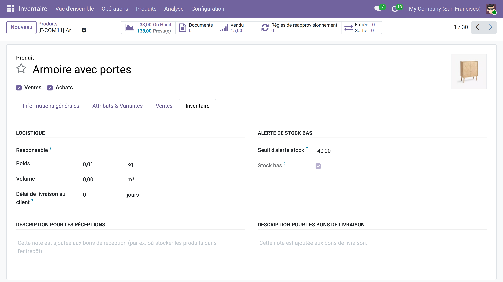
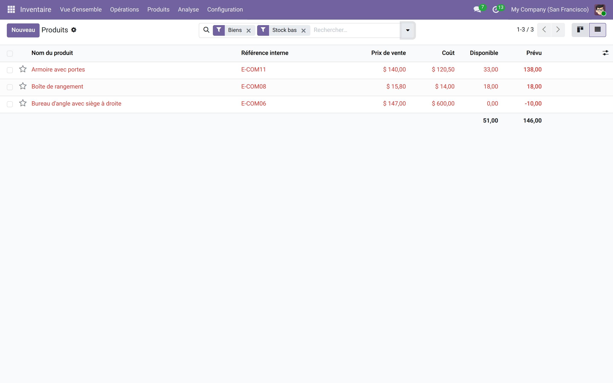
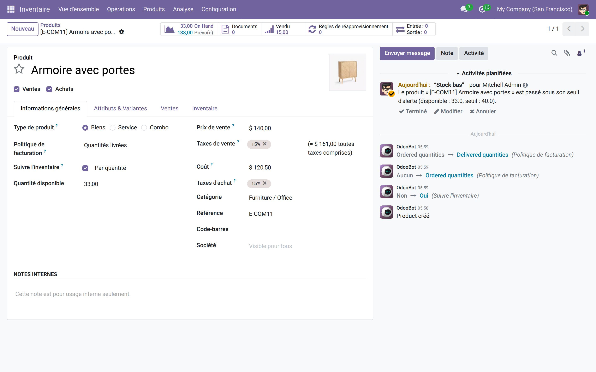

Alerte de stock bas
Soyez prévenu avant la rupture — seuil par produit, lignes rouges et activité quotidienne pour le responsable inventaire, sans aucun paramétrage technique.
Les règles de réapprovisionnement d'Odoo déclenchent des bons de commande — mais elles ne préviennent pas un humain quand un produit glisse sous son seuil critique. Résultat : des ruptures silencieuses découvertes trop tard, après un refus de livraison ou une ligne de commande bloquée. Il manque simplement un signal visible et un rappel quotidien pour la bonne personne.
Ce que ça apporte
- 🎯 Seuil personnalisable par produit — un simple champ numérique dans l'onglet Inventaire ; mettre 0 désactive l'alerte.
- 🔴 Lignes rouges dans la liste — dès que la quantité disponible passe sous le seuil, la ligne se surligne en rouge pour une lecture immédiate.
- 🔍 Filtre « Stock bas » dédié — isolez en un clic tous les produits en alerte, sans requête personnalisée.
- 📅 Activité quotidienne automatique — un cron crée chaque jour une activité « À faire » sur chaque produit en alerte, assignée au responsable inventaire.
- ✅ Anti-doublon intégré — tant que l'activité précédente n'est pas traitée, aucune nouvelle alerte n'est créée pour ce produit.
En images
1. Définir le seuil sur la fiche produit
Dans l'onglet Inventaire, indiquez la quantité plancher en dessous de laquelle vous souhaitez être alerté. L'indicateur « Stock bas » se met à jour en temps réel.

2. Repérer instantanément les produits en alerte
Le filtre « Stock bas » isole tous les produits sous leur seuil ; les lignes passent en rouge pour une lecture immédiate sans ouvrir chaque fiche.

3. L'activité quotidienne du responsable
Chaque matin, le cron planifie une activité sur les produits en alerte. Le responsable inventaire retrouve sa liste de réassorts directement dans ses activités Odoo, sans chercher.

Pourquoi l'adopter
- Gratuit et autonome — aucune dépendance externe, aucun abonnement à un service tiers.
- Zéro formation : le seuil s'installe dans l'onglet Inventaire déjà connu de vos équipes.
- Les alertes arrivent dans les activités Odoo natives — pas de notification email supplémentaire à configurer.
- Le mécanisme anti-doublon évite le bruit : une activité par produit jusqu'à traitement, pas de flood quotidien.
Licence LGPL-3 — compatible Odoo 19.0. Support : support@odooskills.com.